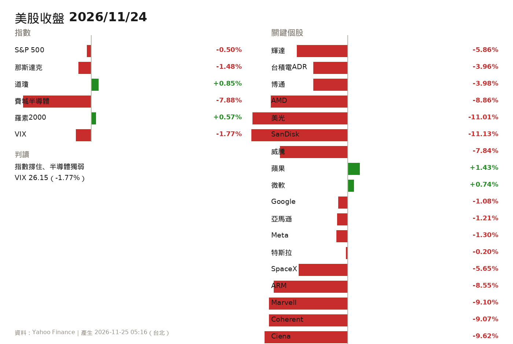
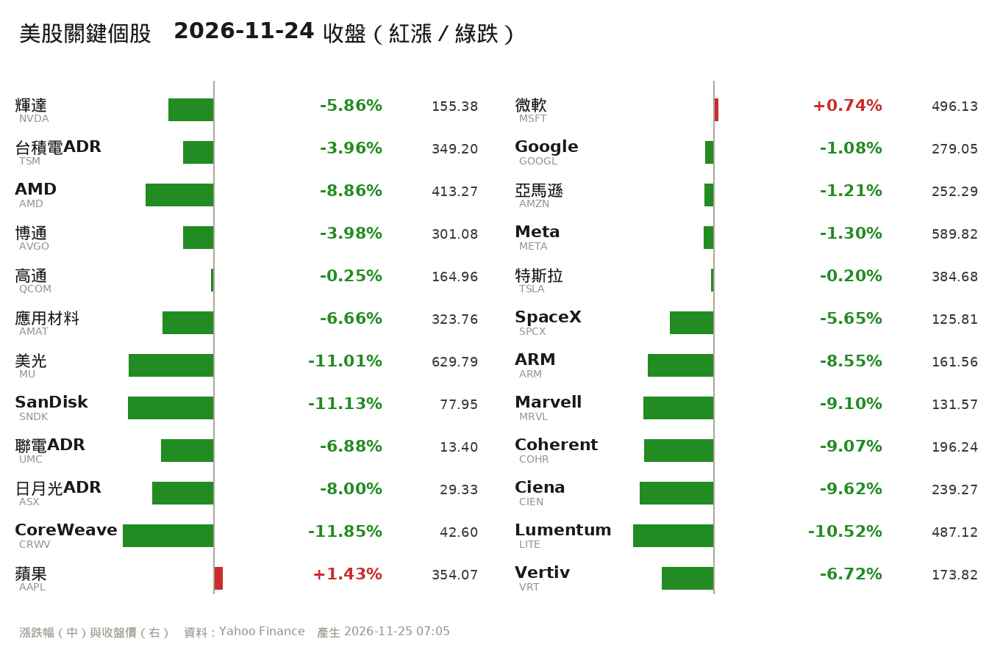
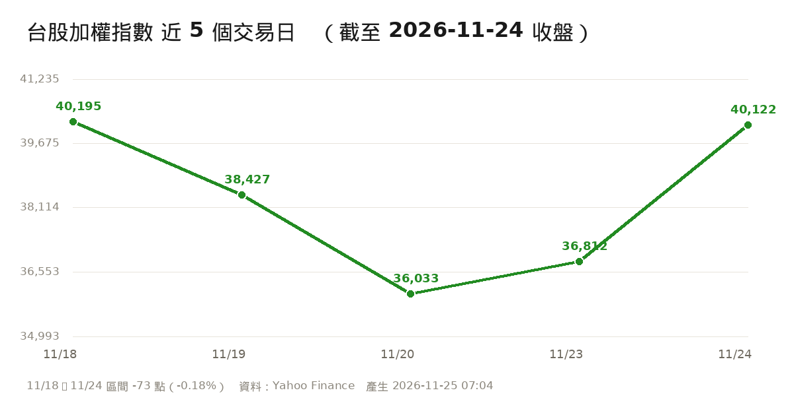
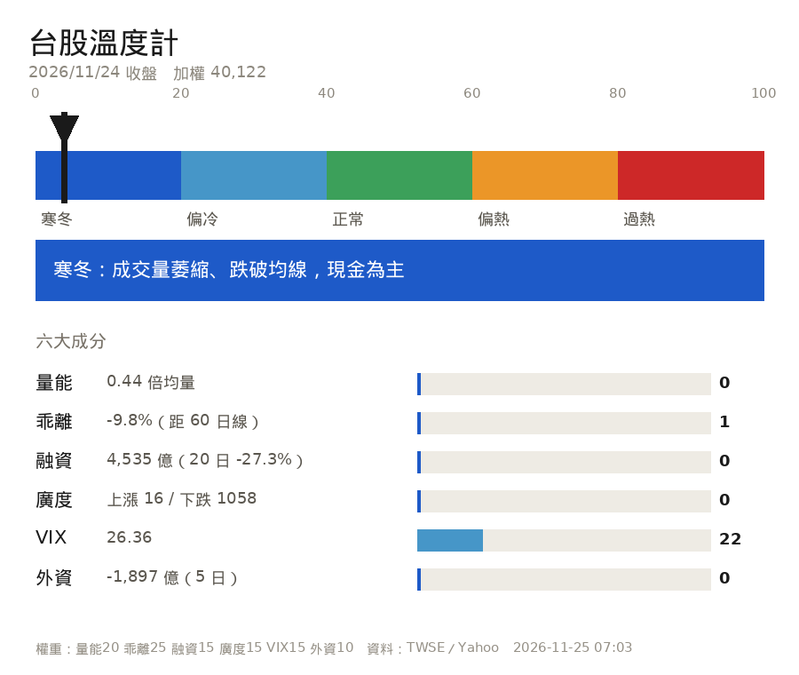
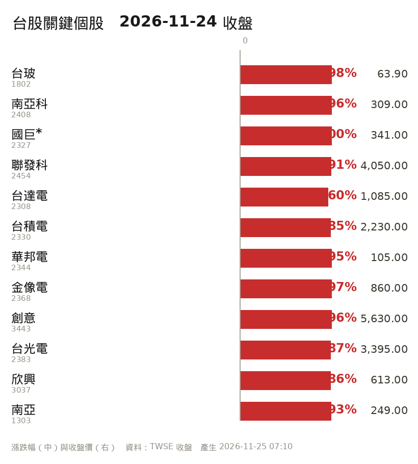
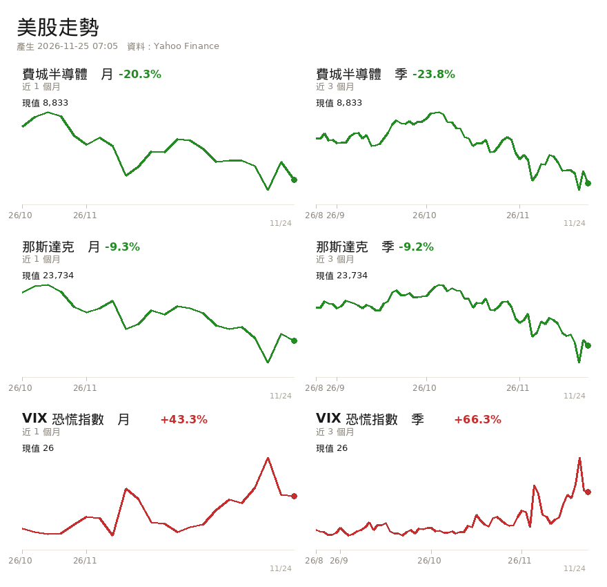
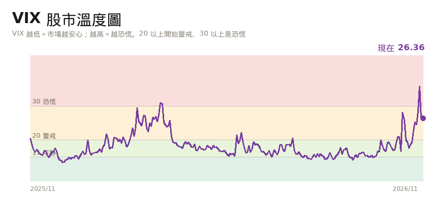
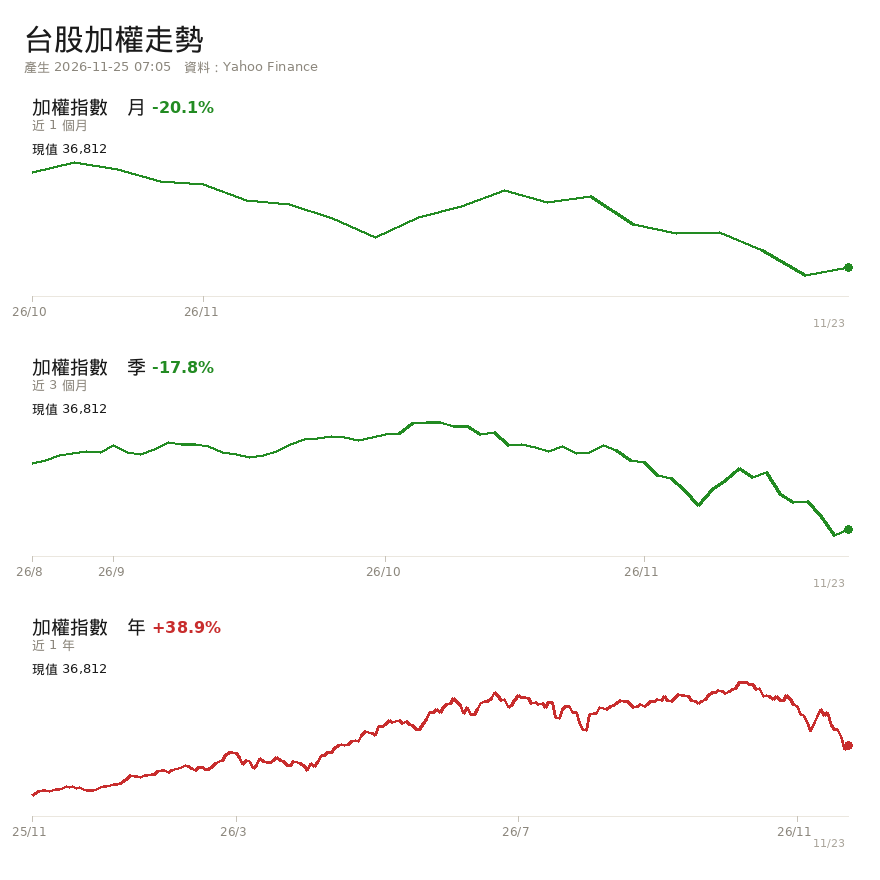

2026-11-25 投資日報2026-11-25 07:10
產生時間：2026-11-25 07:00（台北）｜資料截止：台股 11/24 收盤、美股 11/24 收盤（台北 11/25 05:00）
🚨 警報狀態（L3）：黃仁勳行情只維持一天，今天要補跌 1,800 點
已發生（有價格）
- 費半 11/24 -7.88% 收 8,832.50，把前一日 +14.03% 的漲幅吐掉一半以上；NVDA -5.86%、AMD -8.86%、美光 -11.01%、SanDisk -11.13%。
- 台指期夜盤收 38,482（-1,842 點）、台積電期貨 2,149（-89 元）。相對台股 11/24 收盤 40,122.35，今天開盤約 -4.1%，四萬點會失守。
- 台股 11/24 那根 +3,310 點是**「買不到」的漲**：上市櫃 621 家漲停、成交金額只有 4,194 億（今年最低），而三大法人賣超 1,216.5 億。今天的跌，是「賣得掉」的跌。
這不是新事件，是同一段行情的中途（2026-11 那次你沒逃過，EP.177 就提示過）。風險未解除前，每天都會出現在最前面。
今天最容易犯的錯：把「跌 4%」當成「昨天漲 9%，今天便宜了」。昨天漲的是政策＋空單回補，不是買盤。
重點提醒｜Emmy（持續中）
來源：
財經頻道/Emmy追劇時間/Emmy重點提醒追蹤.md。未解除就會每天出現；判定解除當天標「過期」，隔天起不再列出。
- E1 輝達 NVDA／黃仁勳 真正風險不是技術洩密，是「走私晶片＋長期遊說晶片禁令」的國安問題。已持續 13 天。⬆️ 惡化：NVDA 11/24 回吐 -5.86%（前一日 +31.48%）；民主黨舒默、華倫、加列戈公開要求調查「復職公告前的股票持倉」，12/1 眾院閉門簡報、12/3 參院公開作證已排定。程序不只沒結束，還多開一條「持股申報」戰線。解除條件：12/1、12/3 國會程序結束且無新增出口管制或刑事程序。
- E2 台股／美股大盤 民主黨期中選舉大勝 → AI 資料中心與科技業監管收緊的恐慌，是 11/05-11/06 崩盤主因。已持續 17 天。➡️ 未變：BIS 132 頁新規 11/17 生效、封堵五國轉運；今天無新增管制、也無轉鬆。解除條件：具體監管法案送進國會並過關，或政策明確轉向寬鬆。
- E3 台股／美股大盤 「熊市要來了嗎、該獲利了結嗎」——她事前提示了這一波下殺。已持續 24 天。⬇️ 緩解（但隔夜反向）：11/24 加權 +3,310.46（+8.99%）收 40,122.35，史上最大收盤漲點、621 家漲停、站回年線；但同日三大法人合計賣超 1,216.5 億（外資 -503.9 億、連 8 賣），且美股 11/24 費半 -7.88%、台指期夜盤 -1,842 點，今開盤要補缺口。解除條件（站回季線＋外資連續買超）未達標。
- E4 油價／布蘭特原油 中東戰火推升油價 → 通膨壓力 → 股市下跌。已持續 27 天。⬇️ 緩解：布蘭特 11/24 收 88.50（-0.97%）、WTI 81.69（+1.90%），仍在 90 以下；但荷姆茲海峽再傳油輪遇襲、OPEC+ 11/29 開會，中東無降溫證據，故不解除。解除條件：布蘭特回落至 90 美元以下且中東衝突降溫。
- E5 記憶體族群／8299 群聯 大摩一次降 6 檔記憶體、目標價腰斬，群聯 2,588→1,357 降為「劣於大盤」。已持續 14 天。⬆️ 惡化：高盛下調 2028 年 DRAM／NAND 均價約 20%，同步砍三星、SK 海力士目標價 → 美光 -11.01%、SanDisk -11.13%、SK 海力士 ADR -9.88%。台股 8299 群聯 11/24 仍漲停 1,595，但這是政策盤的軋空，不是報價轉強。解除條件：NAND 現貨報價重新轉強且外資對群聯轉為買超，或大摩回補評等。
- E7 AI 硬體成本／毛利率見頂 輝達 Q4 毛利率指引 71~72%，低於本季 74.8%；採購承諾大幅增加，成本往上游擠。已持續 7 天。➡️ 未變：Q4 毛利率指引 71~72% 不變；採購承諾仍未以 10-Q 原文核對。解除條件：輝達毛利率回升至 74% 以上且採購承諾增速放緩，或記憶體現貨報價連續 2 個月回落。
- E8 跨資產同步下跌／流動性緊縮 股、油、金同一天一起跌，代表「保證金追繳、到處變現」，不是資金輪動。已持續 4 天。⬆️ 惡化：11/24 又出現同向——費半 -7.88%、黃金 -2.64%（3,555）、美 10 年殖利率 4.904%、VIX 26.36（反而小跌 0.98%，背離）。股金同跌＝變現壓力再現。解除條件：VIX 回落至 25 以下、黃金與股市不再同步下跌、美 10 年殖利率止穩。
- E9 AI 晶片出口許可調查擴散（輝達＋超微） 調查戰線從「走私」擴大到「許可審查」與「會計揭露」；超微遭 Hunterbrook 做空報告狙擊。已持續 3 天。➡️ 未變（價格惡化、程序未結）：AMD 11/24 收 413.27（-8.86%），做空報告未被監管駁回、國會聽證未舉行。解除條件：國會聽證結束且無新一輪管制、超微與輝達不再創低，或做空報告被監管駁回。
- E10 政策／政治市：暴漲暴跌 這一波下跌與反彈都由「政治決定」驅動——川普 11/23 發文要求輝達回聘；台股靠國安基金＋限空令 3.0＋維持率降至 120% 拉抬。漲跌理由不在基本面，代表政策一轉彎就會反向。已持續 1 天。⬆️ 惡化：金管會「融資維持率 130%→120%、11/24 前追繳全部取消」11/24 正式生效，同日台股 +3,310 點、621 家漲停，三大法人卻賣超 1,216.5 億（自營 -810.3 億）。漲的是政策與空頭回補，不是買盤進場。解除條件：政策工具退場後指數仍站穩季線 3 日，且外資連續買超 3 日。
⓿ 先回答三個問題：消息面 vs 已發生
① 「黃仁勳行情」是反轉，還是空頭回補？
| 項目 | 狀態 | 說明 |
|---|---|---|
| 11/23 輝達 +31.48%、費半 +14.03% | 🟥 已發生 | 董事會 11/23 22:05 通過復職，記錄級的單日漲幅 |
| 11/24 費半 -7.88%、NVDA -5.86% | 🟥 已發生 | 一天吐掉一半以上，AMD -8.86%、美光 -11.01% |
| 台股 11/24 +3,310 點、621 家漲停 | 🟥 已發生 | 但成交只有 4,194 億（今年最低）、三大法人賣超 1,216.5 億 |
| 高盛：「這是空頭回補驅動的反彈，不代表風險出清」 | 🔵 消息面／觀點 | 券商觀點，不是數據；但和「法人賣超、量能最低」對得上 |
| 今天是反轉的第二天（站穩） | ⏳ 還沒發生 | 夜盤 -1,842 點，開盤先補跌 |
怎麼用：把「復職」當成事件已定、風險未消。判斷這波是不是真反轉，只看兩件事：量能是否放大、外資現貨是否由賣轉買。兩件都沒發生，就不是反轉。
② 川普要對 16 國加關稅，是真的還是傳聞？
| 項目 | 狀態 | 說明 |
|---|---|---|
| 《華爾街日報》：USTR 即將公布 301 條款調查結果，擬以「工業產能過剩」為由提高關稅 | 🔵 消息面 | 報導引述，未見正式公告；適用對象含中國、歐盟等 16 個經濟體 |
| 美股 11/24 科技下殺、道瓊逆勢 +0.85% | 🟥 已發生 | 資金已經在「科技 → 傳產／醫療」輪動，這點是價格說的 |
| 正式公告與稅率 | ⏳ 還沒發生 | 公布前無法評估對台廠的真實影響 |
怎麼用：這是新增的一條風險線（昨天沒有）。若真的公布，受影響的是「在中國／東南亞生產、出貨美國」的台廠，不是全部台股。不要現在就把它當成崩盤理由，但也不要忽略。
③ 記憶體是「景氣見頂」還是「2028 才供過於求」？
| 項目 | 狀態 | 說明 |
|---|---|---|
| 高盛下調 2028 年 DRAM／NAND 均價約 -20%，砍三星、SK 海力士目標價 | 🟥 已發生（報告發布） | 這是「兩年後」的預估，不是現在的報價 |
| 美光 -11.01%、SanDisk -11.13%、SK 海力士 ADR -9.88% | 🟥 已發生 | 市場先反應再說 |
| Q4 PC DRAM 合約價仍季增 13~18%、Client SSD 季增 5% 內（TrendForce） | 🟥 已發生 | 現在還在漲，只是漲幅收斂——這是事實，和「見頂」不衝突 |
| 美光前瞻本益比 3.76 倍＝便宜？ | 🔵 觀點 | Futurum：低 PE 是「警告標籤」，不是便宜訊號；景氣股買高 PE、賣低 PE |
怎麼用：短線看報價有沒有轉跌（還沒），長線看2028 供給（已經被砍）。兩個時間軸不同，不要用「2028 會過剩」去解釋「今天跌 11%」，那是兩件事。
① 一句話結論
今天開盤就是「回吐日」：夜盤 -1,842 點、約 -4.1%，四萬點會破。今天只做三件事——不接刀、不攤平、不追反彈；2454 開盤就會碰到你的成本 3,895，碰到就減半，不問理由。
- 市場溫度 4／100（寒冬）：量能 0.44 倍均量、乖離 -9.8%、融資 20 日 -27.3%、外資 5 日 -1,897 億全部落在極冷區（廣度那一項的資料與證交所官方「上漲 1,077／下跌 28」不符，該項無效，其餘五項才是重點）。寒冬的意思是「跌深」，不是「會彈」；紀律上寒冬該做的是不要摸底。
- 今天的紀律第一行：不追、不攤平、不加碼（均線與量能都沒過，進場三條件一條都不成立）。
- 🎒 JNA-202 PRO 快取單肩包：目前最低 2,800（BigGo／飛比 全新），目標 1,500，還差 1,300，未達標。
🌙 盤前跨市場預警（06:40 產出，摘要）
完整檔：
日報/素材/2026-11-25_盤前預警.md
- ① 美股昨夜：道瓊 +0.85%、S&P -0.50%、那斯達克 -1.48%、費半 -7.88%、VIX 26.36；美元／台幣 32.961。
- ② 原因：獲利了結為主（NVDA 前一日 +31.48%）、政治與監管質疑升溫（參議員要求查復職前持股）、高盛砍 2028 記憶體展望、AI 舉債 ROI 疑慮、PCE 前觀望、油價因荷姆茲再傳遇襲回升。
- ③ 影響期間：短期 1~2 週偏空、波動放大（14 天內塞了 PCE、感恩節、兩場國會、FOMC）；中期 1~3 個月區間震盪、個股分化；長期半年以上是「AI 算力蓋在哪一國」的結構問題。
- ④ AI 建議：先執行紀律、不做新決定；今天不新增部位，等今晚 21:30 PCE；若真要接，只接指數與高息 ETF，不接被點名的個股。
- ⑤ YouTube 建議：48 小時內 5 支影片全部錄在 11/24 台股 +3,310 點之前，沒有一支看到今天的跳空，這是它們共同的時間落差。Emmy 的框架是「復職＝風險升溫」；財女珍妮主張「極端恐慌不搶反彈」；晨星說「維持率 120% 是止血不是治病」。
- ⑥ 新聞建議：高盛（回歸消除管理層不確定性，但風險未出清）、滙豐（AI 烏雲未散）、郭明錤（3 不確定、1 瓶頸）、陸行之（回歸出口政策、雲端融資、晶片競爭）、理財周刊（4 萬點是層層關卡）。
- ⑦ 綜合建議：① 先執行紀律（2454 跌破 3,895 減半、3,830 全出）；② 今天不新增部位，等 PCE；③ 真要接只接 ETF。
② 國際與美股（11/24 收盤，台北 11/25 05:00）
| 指數 | 收盤 | 漲跌 |
|---|---|---|
| S&P 500 | 7,201.09 | -0.50% |
| 那斯達克 | 23,733.54 | -1.48% |
| 道瓊 | 50,018.70 | +0.85% |
| 費城半導體 | 8,832.50 | -7.88% |
| 羅素 2000 | 2,684.94 | +0.57% |
| VIX | 26.36 | -0.98% |

關鍵個股（24 檔，全部即時抓取，非記憶）
| 個股 | 收盤 | 漲跌 | 一句判讀 |
|---|---|---|---|
| 輝達 NVDA | 155.38 | -5.86% | 復職行情只熱一天；下一個變數是 12/1、12/3 國會，不是財報 |
| 台積電 ADR TSM | 349.20 | -3.96% | 跌得比 NVDA 少，是因為 2330 前一天漲停鎖死、ADR 沒有超漲 |
| AMD | 413.27 | -8.86% | 跌幅是 NVDA 的 1.5 倍，做空報告＋許可調查兩條線都壓在它身上 |
| 博通 AVGO | 301.08 | -3.98% | 客製化晶片跌幅較輕，資金沒有全面撤出 ASIC |
| 高通 QCOM | 164.96 | -0.25% | 幾乎平盤，手機晶片不在 AI 硬體風暴中心 |
| 應用材料 AMAT | 323.76 | -6.66% | 設備股跟著記憶體殺，資本支出預期被往下修 |
| 美光 MU | 629.79 | -11.01% | 高盛砍 2028 均價 20%，它是被點名的第一排 |
| SanDisk SNDK | 77.95 | -11.13% | NAND 現貨最敏感，波段從高點已 -70% 以上 |
| 聯電 ADR UMC | 13.40 | -6.88% | 成熟製程跟著殺，前一天 +19.5% 的漲幅吐掉三分之一 |
| 日月光 ADR ASX | 29.33 | -8.00% | 封測同步，AI 供應鏈沒有「不受影響」的環節 |
| CoreWeave CRWV | 42.60 | -11.85% | 高槓桿新創雲端，波動最大；AI 舉債 ROI 疑慮直接打在它身上 |
| 蘋果 AAPL | 354.07 | +1.43% | 資金往防禦跑，這是「輪動」不是「崩盤」最直接的證據 |
| 微軟 MSFT | 496.13 | +0.74% | 同上，雲端資本支出疑慮讓它跌不下去也漲不上去 |
| Google GOOGL | 279.05 | -1.08% | 跌幅溫和，TPU 題材沒有被打壞 |
| 亞馬遜 AMZN | 252.29 | -1.21% | 中性 |
| Meta META | 589.82 | -1.30% | 中性偏弱 |
| 特斯拉 TSLA | 384.68 | -0.20% | 幾乎平盤，高 Beta 這次沒帶頭殺 |
| SpaceX SPCX | 125.81 | -5.65%（紅字，超過 ±5%） | 新股波動大；這次是風險偏好收縮的連帶下跌，沒有發射失敗或財報問題，屬「跟著殺」 |
| ARM | 161.56 | -8.55% | 客製化晶片這條線跌幅與 GPU 相近，代表資金不是「從 GPU 換到 ASIC」，是兩邊一起撤 |
| Marvell MRVL | 131.57 | -9.10% | 同上；ASIC 與光通訊 DSP 雙題材，跌得比 NVDA 重 |
| Coherent COHR | 196.24 | -9.07% | 光通訊三檔同步重挫＝資料中心內部連線需求被重新折現 |
| Ciena CIEN | 239.27 | -9.62% | 同上 |
| Lumentum LITE | 487.12 | -10.52% | 前一天 +18.20%，一天吐掉一半以上，是這組裡波動最大的一檔 |
| Vertiv VRT | 173.82 | -6.72% | 散熱電源；跌幅比晶片輕，代表「機房還是要蓋」的預期還沒被推翻 |

上漲的部分（別只看跌）：道瓊 +0.85%、羅素 2000 +0.57%、蘋果 +1.43%、微軟 +0.74%，醫療保健 +2.88%、公用事業與民生消費各 +1% 以上。翻成白話：這不是「全面崩盤」，是「從 AI 硬體搬到防禦與傳產」的輪動。真正被打的是半導體與記憶體，不是整個市場。誤判成全面崩盤，會做出「把所有股票砍光」這種過頭的決定。
上漲主因：① 資金輪動到醫療、公用事業、民生消費（道瓊創高）；② 11 月消費者信心 103.3（預期 92.5），消費面沒崩；③ 前一日的漲幅太大，獲利了結的錢沒有離開市場，只是換地方。
下跌主因：① 費半前一日 +14.03%，回吐一半以上；② 高盛砍 2028 年記憶體均價 20%；③ 《華爾街日報》報導 USTR 將對 16 個經濟體加關稅；④ CME FedWatch：12 月升息 25 個基點機率 97.4%（是升息，不是降息），加上今晚 PCE，利率風險沒有解除。
跨市場
| 項目 | 數值 | 漲跌 |
|---|---|---|
| 美 10 年期殖利率 | 4.904% | -0.28% |
| 美 5 年期殖利率 | 4.712% | -0.34% |
| 美元指數 | 103.823 | -0.48% |
| 布蘭特原油 | 88.50 | -0.97% |
| WTI 原油 | 81.69 | +1.90% |
| 黃金 | 3,555.10 | -2.64% |
| 美元／台幣 | 32.960 | 台幣小貶 0.02% |
| VIX | 26.36 | -0.98% |
判讀：股跌、金也跌（黃金 -2.64%），這是 E8 指的「變現壓力」，不是避險買盤。VIX 反而小跌 0.98% 是背離——選擇權市場沒有想像中恐慌，恐慌的是現貨持股的人。油價 WTI 漲 1.90%（荷姆茲再傳油輪遇襲），是通膨端的新變數。
③ 台股覆盤（11/24 週二）
| 項目 | 數值 |
|---|---|
| 加權指數 | 40,122.35（+3,310.46、+8.99%）史上最大收盤漲點 |
| 開／高／低 | 39,148.91／40,180.38／39,148.91（開低走高、一路鎖上去） |
| 成交金額 | 4,194.05 億（今年以來最低） |
| 櫃買指數 | 293.23（+8.24%） |
| 上漲／下跌家數（上市） | 1,077／28（中央社）；上市櫃合計 1,893／60 |
| 漲停／跌停（上市櫃） | 621／6 |
| 三大法人 | -1,216.5 億（外資 -503.9、投信 +97.6、自營 -810.3） |
| 融資餘額 | 4,535 億（+197 億） |
| 融券 | 186,613 張（+13,656 張） |
| 台幣 | 32.960（小貶） |

盤勢節奏（白話）
- 開盤就跳空 39,148（+6.3%），盤中最高 40,180：夜盤漲停的定價直接兌現，權值股幾乎全鎖漲停，2330 收 2,230（+9.85%）、2454 收 4,050（+9.91%）。
- 量能只有 4,194 億，是今年最低：不是沒人想買，是漲停鎖死買不到。這種量不是「惜售」，是「流動性消失」。
- 漲停 621 家、跌停只剩 6 家：表面全面沸騰，但看籌碼就破功——三大法人同日賣超 1,216.5 億，其中自營 -810.3 億（ETF 造市與避險部位同步縮手）。
- 融資餘額反而增加 197 億、融券增加 13,656 張：散戶在漲停日追價、同時有人進場放空。這是多空對撞最激烈的組合，隔天（今天）就是結算誰對誰錯。
這根 K 線怎麼看：+8.99% 但量能最低、法人賣超，是典型的**「政策性軋空」**——空單回補＋漲停鎖死造成價格失真。價格往上跳，籌碼卻在往外走，這種組合的隔天通常不會延續。
③-1 💰 三大法人與籌碼（2026-11-24）
| 法人 | 買賣超（億元） |
|---|---|
| 外資 | -503.9 |
| 投信 | +97.6 |
| 自營 | -810.3 |
| 合計 | -1,216.5 |
外資買超 TOP 10
| 代號 | 名稱 | 張數 |
|---|---|---|
| 2610 | 華航 | +15,908 |
| 2882 | 國泰金 | +12,538 |
| 5871 | 中租-KY | +10,654 |
| 2834 | 臺企銀 | +10,116 |
| 9904 | 寶成 | +9,082 |
| 2881 | 富邦金 | +7,042 |
| 2880 | 華南金 | +5,799 |
| 2891 | 中信金 | +4,501 |
| 1229 | 聯華 | +3,789 |
| 5876 | 上海商銀 | +3,725 |
外資賣超 TOP 10
| 代號 | 名稱 | 張數 |
|---|---|---|
| 2892 | 第一金 | -23,110 |
| 2884 | 玉山金 | -21,496 |
| 1301 | 台塑 | -20,024 |
| 2303 | 聯電 | -18,764 |
| 2027 | 大成鋼 | -17,457 |
| 6505 | 台塑化 | -16,374 |
| 3006 | 晶豪科 | -15,508 |
| 2382 | 廣達 | -12,734 |
| 2609 | 陽明 | -10,238 |
| 2801 | 彰銀 | -8,992 |
投信買超 TOP 10
| 代號 | 名稱 | 張數 |
|---|---|---|
| 2027 | 大成鋼 | +24,830 |
| 2892 | 第一金 | +20,197 |
| 2618 | 長榮航 | +14,712 |
| 2412 | 中華電 | +13,665 |
| 2886 | 兆豐金 | +12,764 |
| 2610 | 華航 | +9,767 |
| 2890 | 永豐金 | +9,193 |
| 2884 | 玉山金 | +7,597 |
| 1216 | 統一 | +6,490 |
| 2382 | 廣達 | +4,331 |
投信賣超 TOP 10
| 代號 | 名稱 | 張數 |
|---|---|---|
| 2882 | 國泰金 | -8,422 |
| 2880 | 華南金 | -7,432 |
| 2356 | 英業達 | -5,958 |
| 5871 | 中租-KY | -5,782 |
| 2891 | 中信金 | -4,742 |
| 2887 | 台新新光金 | -3,881 |
| 9904 | 寶成 | -3,827 |
| 4915 | 致伸 | -2,430 |
| 5876 | 上海商銀 | -2,283 |
| 3706 | 神達 | -1,965 |
自營買超 TOP 5
| 代號 | 名稱 | 張數 |
|---|---|---|
| 2409 | 友達 | +1,069 |
| 2610 | 華航 | +822 |
| 2317 | 鴻海 | +802 |
| 2880 | 華南金 | +793 |
| 2883 | 凱基金 | +733 |
自營賣超 TOP 5
| 代號 | 名稱 | 張數 |
|---|---|---|
| 3006 | 晶豪科 | -1,281 |
| 2887 | 台新新光金 | -1,137 |
| 2881 | 富邦金 | -1,062 |
| 2353 | 宏碁 | -829 |
| 1301 | 台塑 | -775 |
散戶槓桿（融資融券）
- 融資餘額 4,535 億（+197 億）
- 融券 186,613 張（+13,656 張）
政府股市政策（持續中）
-
2026-11-09 金管會 借券賣出上限 30% → 3%、融券保證金 90% → 130% 每日盤中借券賣出量由「前 30 日均量 30%」降至 3%；融券保證金成數由 90% 提高至 130%；並放寬補繳擔保品（零股、基金、海外股票可抵繳）。
-
2026-11-20 金管會 收盤跌逾 3.5% 個股，隔日禁止平盤下放空；借券上限 3% → 1% 針對當日跌幅超過 3.5% 的股票，次一交易日禁止平盤以下放空；借券賣出上限再降至 1%。
-
2026-11-24 金管會 融資維持率 130% → 120%，11/24 前追繳紀錄全部取消 11/24 起整戶擔保維持率門檻降至 120%；11/24 前因低於 130% 被追繳者，追繳通知取消、擔保品不處分。上次降至 120% 為 1998 年。
-
2026-11-21 國安基金 國安基金進場（新聞報導，未見正式公告逐字） 授權執行秘書視情況動用資金護盤。此項為媒體報導，官方公開資訊尚待確認，日報標示為「消息面」。
-
我的持股：2886 兆豐金 投信 +12,764 張（投信買超第 5 名）；其餘 10 檔（0050、00713、1432、2002、2454、2634、3718、4160、6469、8033）未進入任何買賣超 TOP 榜。
判讀：外資買超集中在金融、航空、傳產（華航、國泰金、中租、寶成），賣超集中在金控（第一金、玉山金）與原物料（台塑、大成鋼）。這個組合的意思是：外資在「降低循環與半導體曝險」，不是在「全面撤出台灣」。投信買超則是同步買金融＋航空，和大盤漲的方向一致但標的不同——法人與散戶買的東西，不是同一批股票。
④ 頻道影片重點
48 小時內沒有新集數（最新仍是 11/23），以下沿用最近一輪筆記，時間碼為原筆記段落定位。
🔴 加碼／看多訊號
- 台股大盤｜融資從 6,376 億砍到 4,338 億，籌碼「海綿排水」後才有空間（宏爺 11/23，⏱ [10:34]）
白話：借錢買股票的人變少了，未來上漲時「被斷頭賣壓」扯後腿的力量也小。注意：11/24 融資又回升 197 億到 4,535 億，這個利多被部分抵銷。
- 美光｜26 份多年期長約、RPO 1,500 億美元、客戶先付 127 億美元現金（宏爺 11/23，⏱ [18:09]）
白話：客戶先付錢排隊，比只簽意向書扎實。但 11/24 美光 -11.01%，價格顯然不買單「長約」這個理由。
- 台灣半導體供應鏈｜不管訂單給輝達、AMD 或自研 ASIC，先進製程／封測／客製化設計都在台灣（宏爺 11/23，⏱ [19:10]）
- 外銷訂單 +78.3%、出口 +58.9%、景氣連 10 紅（宏爺 11/23，⏱ [20:24]）→ 已發生，基本面沒有壞
- 台玻、南亞「看起來是傳產、其實是 AI PCB 材料」（晨星 11/23，⏱ [06:30]）
白話：玻纖布與銅箔基板是 AI 伺服器電路板的最上游；看族群名稱會誤判。
🟢 危機／減碼訊號
- 費半跌破所有均線、月 KD 高位死叉後 K 值 30.62（宏爺 11/23，⏱ [02:09]）→ 要等「低位黃金交叉」，現在只是低位。11/24 再跌 7.88%，均線更遠了。
- 美光 F12M 本益比 3.76 倍＝景氣高點警訊，不是便宜（宏爺 11/23，⏱ [17:03]）
白話：景氣循環股「買在高本益比、賣在低本益比」；PE 個位數代表市場認為獲利要往下。11/24 高盛砍 2028 展望，正是這句話的註腳。
- 輝達 12/1 赴眾院、12/3 參院作證，政策風險未定（宏爺 11/23，⏱ [18:34]）
- 大盤從 10/6 高點 -28.4%、1,805 檔破年線（宏爺 11/23，⏱ [13:16]）
- 這次是「止血不是治病」（晨星 11/23，⏱ [11:40]）→ 維持率 120% 只是晚點被敲門，借的錢一塊沒少
- 如果指數再跌 8～10%（約 33,000），卡在 120% 的人會被再推一次，且政策工具少一個（晨星 11/23，⏱ [10:50]）
- AI 債務結構：資料中心融資 1,300 億 → 6,800 億美元；已簽約未起租租約逾 1 兆美元（財女珍妮 11/23，⏱ [18:00]）
📊 情緒溫度計（逐字稿實算，非感覺）
| 集數 | 字數 | 危機詞 | 看多詞 | 比值（危機：看多） |
|---|---|---|---|---|
| 宏爺 11/23 | 6,254 | 25 | 29 | 0.86 : 1 |
| 晨星 11/23（台積電） | 5,596 | 18 | 19 | 0.95 : 1 |
| 晨星 11/23（維持率） | 4,644 | 12 | 7 | 1.71 : 1 |
| 財女珍妮 11/23 | 28,688 | 147 | 95 | 1.55 : 1 |
| 一綺 11/22 | 13,833 | 15 | 27 | 0.56 : 1 |
算法：危機詞 26 個（崩跌、暴跌、崩盤、減碼、退場、泡沫、逃命、恐慌、斷頭、追繳…）、看多詞 20 個（加碼、看好、上修、成長、買進、佈局、受惠…），逐字稿全文計次。
語氣判讀：沒有一台在喊多，但也沒有一台在喊崩。 財女珍妮 1.55:1 最保守（她的危機詞集中在「風險」53 次，是徹底的風險論述）；宏爺 0.86:1 看似偏多，其實是「政策＋基本面」兩個詞撐起來的；一綺 0.56:1 是因為她整集在講「怎麼活下來」，用字反而溫和。翻成白話：這是「不敢看多、也不敢看空」的集體語氣，通常出現在反彈的第一次失敗之後——也就是今天。
🔵 中長期展望（產業趨勢）
- AI 的錢從「晶片」往「材料與電力」擴散：玻纖布、銅箔基板、散熱電源（Vertiv）在上一輪跌得比晶片少，代表市場認為「算力瓶頸移到供電與傳輸」。這條線不會因為黃仁勳回不回來而改變。
- 客製化晶片（ASIC）與 GPU 現在是「同一條船」：11/24 ARM -8.55%、MRVL -9.10%，和 NVDA -5.86% 同向，代表資金不是「從 GPU 換到 ASIC」，是全面降低 AI 硬體曝險。上一次（11/23）兩邊一起漲也是同一個道理。
- 記憶體進入「合約鎖價」的新週期，但市場還不信：美光 26 份長約、客戶先付現金是事實；但前瞻 PE 3.76 倍也是事實——市場認為 2028 供給會壓垮價格（高盛的報告）。這個矛盾要等 Q4 財報與 1 月法說才會解。
- 政策成為台股的新變數：限空令 3.0＋維持率 120%＋國安基金，讓台股短期「跌不深、也漲不遠」；但 11/24 的示範是——政策可以讓指數一天漲 9%，也可以讓法人一天賣 1,216 億。政策托底不等於趨勢反轉。
- 關稅是新的一層風險：USTR 對 16 個經濟體的 301 調查（消息面），若成真，影響的是「在中國、東南亞生產出貨美國」的台廠，會讓「產能放哪裡」這個問題從 AI 晶片延伸到一般電子。
📺 一綺聊股最近一期（2026年11月22日）
2026年11月22日 一綺聊股 LIVE｜夜盤又崩 1,881 點..持股腰斬怎麼辦？金管會第三波「禁空令」救的了嗎？
- 國巨（2327） 外資近十個交易日偏買，300 元以下有人接
- 南亞（1303） 玻纖布五檔裡最穩，有實質營收獲利、今年已賺一個股本
- 台積電（2330） 長期買盤不會消失，問題只是「何時才是終點」
- 台玻（1802） 11/20 融資逆勢增加、跌停被 400 張連續單敲開
- 大盤 11/25 之前不要動作；短線 32,000–35,738 是下一個觀察區
- 操作 不要攤平、不要因外資買就跟買 2327、不要相信「限空令＝馬上止跌」
驗證：她說「11/25 之前不要動作」→ 今天正好是 11/25，開盤估 -4%，她這次的時間點抓對了（前一天 +3,310 點的多數人已經進場）。
📇 頻道摘要（六台最新一期）
原樣收錄
財經頻道/頻道摘要.md（今日六台均無新集數，沿用最新一期）。
每個頻道固定四欄：名稱／內容／評論／最近貼文 最後更新：2026-11-25 07:05（台北）｜今日查核：六台均無新集數，沿用 11/23–11/22 最新一期；Emmy 11/25 抓取新貼文 0 則 各頻道自己的版本：
財經頻道/<頻道>/頻道摘要.md
Emmy追劇時間 2026/11/17（EP.179）
名稱：黃仁勳下台 輝達震撼彈
內容
- 黃仁勳被逼宮下台。輝達的治理重度依賴黃仁勳個人決策，這是她認為最嚴重的地方。
- 但這波大跌不單純因為他的人事，真正原因是 BIS（美國商務部出口安全局）11/17 公布 132 頁新禁令：新加坡、馬來西亞、泰國、印尼、巴西也被列入管制。
- 過去中國 AI 公司走兩條路：走私伺服器（量少，買不到 10%）、或在親中國家蓋資料中心遠端算（量大）。新禁令把第二條路堵死。
- 對台股／台積電的傳導：先進晶片出貨地點被限縮 → 客戶拉貨節奏改變。
評論
- 她把「人事」和「政策」分開講，這點是對的：黃仁勳回不回來是消息面，BIS 132 頁是已發生。
- 真正該盯的是「資料中心蓋在哪」這條線，比「誰當 CEO」影響更長。
- 她自己的說法偏保守：沒說崩完了，只說這是結構性變化。
最近貼文（11/25 抓取：新貼文 0 則，最新仍是 11/22）
- 「台股跌破四萬點一路向下…說好的逃生通道在哪裡？ AI 泡沫真的來了嗎？」（11/22）
- 另提 AMD 也爆 AI 晶片走私疑雲（眾院公開 BIS 許可：輝達＋超微 87.99 萬顆輸中；做空機構 Hunterbrook 指控，超微否認）
- 11/19 那則今天被驗證：她原話「直接官復原職，他接下來就一定會做出更可怕的事情」→ 11/23 黃仁勳真的復職
- 貼文態度：她把這波定義為「已發生」，問的是出場窗口，不是抄底點；復職對她是風險升溫，不是利空出盡
一綺聊股 2026/11/22
名稱：夜盤又崩 1,881 點..持股腰斬怎麼辦？金管會第三波「禁空令」救的了嗎？
內容
- 🔴 國巨 2327：外資連十日偏買，300 元以下有人承接（但她自己說「我也不敢在這邊買」）
- 🔴 南亞 1303：玻纖布五檔裡最穩，有實質營收獲利、今年已賺一個股本
- 🔴 台積電 2330：長期買盤不會消失，問題只是「何時才是終點」
- 🟢 11/25 前先觀望，不要搶反彈
- 🟢 融資戶 T+3 斷頭，最危險在週三（週五被斷的，T+3 落到週三）
- 🟢 最悲觀回測 3/31 的 31,000 點
- 這一集是「唱歌取暖場」，股市段落集中在 02:50–45:00（全長 99 分，只轉錄前 45 分）
評論
- 她的「T+3 斷頭在週三」和 DayStar 講的「11/24、11/25 兩批處分」是同一個機制，兩台獨立講到同一件事，可信度高。
- 但「31,000 點」是最悲觀情境，不是預測；對照 11/23 低點 35,442，等於還要再跌 12%。
- 她點的三檔裡，只有南亞是「有獲利」的邏輯，國巨和台積電都是「有人在接」的觀察，不要當買進訊號。
最近貼文：無（該台以直播為主）
宏爺講股 2026/11/23
名稱：股市反彈騙散戶？別忽視這關鍵！美股逼近熊市、台股急拉千點！國安基金與禁空令聯手，外資態度藏驚人轉折？
內容
- 🔴 融資兩個月減 2,024 億（6,000 多億 → 4,352 億），「海綿的水排掉了」
- 🔴 美光長約 RPO 1,500 億美元，客戶先付現金——他認為這是基本面沒壞的硬證據
- 🔴 外銷訂單 +78.3%，基本面沒壞
- 🔴 國安基金＋限空令政策托底
- 🟢 費半跌破所有均線、月 KD 死叉
- 🟢 美光預估 PE 只有 3.76 倍 → 景氣高點警訊（便宜是因為大家預期衰退）
- 🟢 輝達 12/1 國會聽證，政策風險還沒定
- 🟢 10/6 以來 -28.4%，1,805 檔破年線
評論
- 他的框架是「政策托底＋籌碼沉澱 vs 技術面全破」，所以他也不敢說底部到了。
- 「美光 PE 3.76 倍」這段最值得記：記憶體便宜通常出現在景氣高點，不是低點。
- 12/1 輝達聽證是他給的明確時間點，比「等消息」有用。
最近貼文：無（以影片為主）
晨星 DayStar Brilliant 2026/11/23（兩集）
名稱①：台積電開盤破 2000 又站回來！外資卻狂賣 224 億，這個反彈能信嗎？ 名稱②：融資維持率降到 120%，斷頭危機解除了嗎？官方 151% vs 民間 119%，到底該看哪個？
內容（①）
- 加權收 36,811（+778，+2.16%），盤中最低 35,442、最高 37,081，單日高低差 1,665 點
- 台積電開 1,990 → 低 1,970 → 收 2,030（+1.5%），量縮 26%
- 外資 -289 億（週五的 3 倍），三大法人合計 -512 億
- 早盤先殺的原因是「補週五美股那一刀」（那斯達克 -5.3%、輝達 -14%、台積電 ADR -9.36%）
- 漲最兇的是玻璃陶瓷 +9%、塑膠 +7%（台玻、南亞漲停）——其實是 AI PCB 上游材料（玻纖布、銅箔基板）
- 金融股逆勢跌（中信金 -6.18%）：資金從防守股抽出來搶電子股
內容（②）
- 追繳戶數 11/18 719 戶 → 11/20 6,462 戶（3 天 9 倍）
- 11/24 起維持率 130%→120%，11/24 前追繳全部取消（上次 1998 年）
- 融資買 6 成、跌 22% 就是 130%，這時本金已經虧 55%
- 官方 151% vs 民間扣 ETF 119.5%——兩個都對，回答的問題不同
- 若指數再跌 8-10%（33,000 多），會把卡在 120% 的人再推一次
評論
- 這兩集合起來是她這波講最完整的一套：先講「反彈不能信」，再講「斷頭沒解除」。
- 最有價值的是「玻璃陶瓷其實是 AI PCB 材料」這個拆解，看族群名稱會誤判。
- 她給的驗證條件很清楚：35,442 守住＝有機會成底，跌破＝反彈失敗。
最近貼文：無
鈔錢部署–華視優選 2026/11/22
名稱：【精華】國安基金發威前先買誰？台積電、台光電、南亞科 杜金龍這樣選（盧燕俐 ft. 杜金龍）
內容
- 外資今年賣超 76% 集中在台積電（他的說法，我查不到出處）
- 台積電合理價 2,000 元（先前講 1,952，這次上調）；跌停那天 2,020 有 1.8 萬張成交、外資賣約 89 億
- 跌幅對照：大盤 -24%、台積電 -28%、鴻海 -30% 多、國巨 -70 幾%
- 國安基金一定先護台積電 → 他建議「急跌買、有漲就賣」
- 三率三升約十檔：台光電（2028 EPS 成長 36%、破 7/30 低但守 6/23 高）、南亞科（沒被降評、240 幾元、明年高配息）
- 他的時間窗：這套做法可以做到 11/28–11/29
評論
- 「國安基金護權值」是機制事實，但他說的「當天買、賣給國安基金」在制度上不成立——國安基金不接你的單，賺的是反彈價差，不是它幫你出貨。這是表演式說法，不要照做。
- 「76% 集中在台積電」查無出處；「2,000 是合理價」是他的估值，而 11/23 已收 2,030（在合理價上方）。
- 他全程沒講跌破 1,970 怎麼辦，沒有停損條件的建議不算完整策略。
最近貼文：無
財女珍妮 2026/11/23
名稱：聯準會戳破 AI 泡沫？財長貝森特轉彎，美股崩盤有救了？
內容
- 11/20 美股：道瓊 -1.9%、S&P500 -3.7%、那斯達克 -5.6%、費半 -10.7%、VIX 極度恐懼
- 黃金 11/17–11/20 四天跌近 10%，跌破 3,600 美元 → 市場「現金為王」，不是避險失效
- 聯準會金融穩定報告：資產估值仍偏高、金融機構槓桿 2013 年以來最高、87% 受訪者提 AI 風險（前次 50%）
- AI 資料中心融資：2023 年 1,300 億 → 2026/10 超過 6,800 億美元；投資級發債占比 6% → 31%
- 看不到的負債：已簽約未起租租約 逾 1 兆美元、不用也得付的合約 逾 2 兆美元（SPV、GPU 抵押、證券化）
- 但投資級／高收益債整體冷靜，只有 AI 借款大戶 CDS 升高 → 不是 2008
- 貝森特 11/15 要董事會改組、11/22 改口「黃仁勳也是外部人」→ 她批「自己打自己」
- NVIDIA 10/29 起 11 個交易日跌近 24%，市值蒸發約 1.2 兆美元
評論
- 她最強的證據是「87% vs 50%」與「整體信用市場冷靜、只有 AI 大戶 CDS 升高」——後者把「系統性危機 vs 個別鏈條」分開，避免誤判成 2008 重演。
- 標題的「聯準會戳破 AI 泡沫」她自己列了三種可能（報告導致／同一原因／時間巧合），所以標題是問號，不是結論。
- 整集不給價位、不給買點，比多數名嘴誠實；能抄下來的是兩句：「站不回季線／年線就還有下跌空間」「不要想把虧的錢贏回來」。
最近貼文：無
⑤ 我的持股動態（11 檔，11/24 收盤）
| 代號 | 名稱 | 股數 | 成本 | 現價 | 損益 | 損益% | 當日% |
|---|---|---|---|---|---|---|---|
| 0050 | 元大台灣50 | 60 | 93.88 | 95.70 | +109 | +1.9% | +10.00%（漲停） |
| 00713 | 元大台灣高息低波 | 200 | 46.58 | 61.40 | +2,964 | +31.8% | +5.86% |
| 1432 | 大魯閣 | 20 | 15.25 | 13.95 | -26 | -8.5% | +7.72% |
| 2002 | 中鋼 | 50 | 29.28 | 17.55 | -586 | -40.1% | +4.15% |
| 2454 | 聯發科 | 4 | 3,895.25 | 4,050.00 | +619 | +4.0% | +9.91% |
| 2634 | 漢翔 | 20 | 67.95 | 48.70 | -385 | -28.3% | +4.06% |
| 2886 | 兆豐金 | 311 | 25.50 | 55.00 | +9,174 | +115.7% | +10.00%（漲停） |
| 3718 | 中光電投控 | 40 | 103.12 | 40.95 | -2,487 | -60.3% | +9.93% |
| 4160 | 訊聯基因 | 27 | 114.07 | 30.15 | -2,266 | -73.6% | 0.00%（未成交） |
| 6469 | 大樹 | 11 | -6.18 | 52.60 | +647 | 成本已回收（配息大於成本） | +4.78% |
| 8033 | 雷虎 | 20 | 202.25 | 114.00 | -1,765 | -43.6% | +2.70% |
總成本 52,770 總現值 58,768 總損益 +5,998 報酬率 +11.37% 扣掉兆豐金：成本 44,840 現值 41,663 報酬率 -7.08%
白話：整體看起來賺 11.37%，但那 9,174 元幾乎全是兆豐金一檔貢獻的。把兆豐金拿掉，其餘 10 檔是虧 7.08%。這就是「一檔撐全部」的結構——不是選股好，是倖存者偏差。
逐檔一句話（今天最需要知道的）
- 0050、00713：漲停／大漲，但成分股是台積電與電子權值。今天費半 -7.88%，這兩檔會直接反映，昨日漲幅會吐回去。
- 2454 聯發科：4 股、成本 3,895.25、收 4,050（+4.0%）。今天開盤估 3,888（-4%），一開盤就會跌破成本 → 依盤前預警的條件，跌破 3,895 減半、跌破 3,830 全出。這 4 股只佔部位不到 1 成，出場成本低，訊號價值高。
- 2886 兆豐金：+115.7%，是整個部位的安全氣囊。投信 11/24 買超 12,764 張（第 5 名），金融股在震盪盤是資金避風港，這是你最不需要動的一檔。
- 3718（-60.3%）、4160（-73.6%）、8033（-43.6%）、2002（-40.1%）、2634（-28.3%）：這五檔的虧損早就超過「-7% 無條件出場」的紀律線。它們現在的問題不是「跌多少」，是「為什麼還留著」。今天若反彈無力，這是優先處理名單。
- 1432 大魯閣：-8.5%，小部位，跌破 -7% 紀律線但金額只 -26 元。要不要砍是原則問題，不是金額問題。
🎒 比價追蹤：JNA 包款（目標 1,500）
更新 11-25 07:03｜資料 BigGo／飛比。JNA-202 PRO 官方是「單肩包」。
| 品項 | 全新最低 | 福利品 | 二手 | 距目標 |
|---|---|---|---|---|
| JNA-202 PRO 快取單肩包 | 2,800 | 2,940 | — | 還差 1,300 |
未達標：目前最低仍高於 1,500 元，繼續追。
⑥ 觀察清單與法人動向
台股觀察清單（13 檔）
| 代碼 | 名稱 | 現價 | 漲跌 | 成交量 |
|---|---|---|---|---|
| 2330 | 台積電 | 2,230.0 | +9.85% | 10,832 張 |
| 2308 | 台達電 | 1,085.0 | +9.60% | 967 張 |
| 2454 | 聯發科 | 4,050.0 | +9.91% | 1,102 張 |
| 3443 | 創意 | 5,630.0 | +9.96% | 120 張 |
| 2383 | 台光電 | 3,395.0 | +9.87% | 116 張 |
| 2408 | 南亞科 | 309.0 | +9.96% | 3,071 張 |
| 3037 | 欣興 | 613.0 | +9.86% | 1,096 張 |
| 1802 | 台玻 | 63.9 | +9.98% | 7,367 張 |
| 1303 | 南亞 | 249.0 | +9.93% | 6,954 張 |
| 2327 | 國巨* | 341.0 | +10.00% | 2,506 張 |
| 2368 | 金像電 | 860.0 | +9.97% | 285 張 |
| 2344 | 華邦電 | 105.0 | +9.95% | 4,553 張 |
| 3661 | 世芯-KY | 3,915.0 | +9.97% | 179 張 |
13 檔全部漲停或接近漲停，成交量卻很小（創意 120 張、台光電 116 張）——這是鎖死，不是換手。
外資動向（買賣超，單位：張）
| 代碼 | 名稱 | 今日 | 連續 | 近 5 日累計 | 近 10 日累計 |
|---|---|---|---|---|---|
| 1802 | 台玻 | -734 | 賣超 8 天 | -105,957 | +12,825 |
| 2330 | 台積電 | -4,098 | 賣超 9 天 | -51,088 | -74,696 |
| 1303 | 南亞 | -3,633 | 賣超 2 天 | -19,857 | -73,353 |
| 2344 | 華邦電 | -1,032 | 賣超 2 天 | +15,532 | +8,072 |
| 2308 | 台達電 | -460 | 賣超 1 天 | -9,108 | -18,616 |
| 2327 | 國巨* | -996 | 賣超 1 天 | +7,397 | +12,832 |
| 2408 | 南亞科 | -1,010 | 賣超 2 天 | +6,960 | +19,650 |
| 2454 | 聯發科 | -94 | 賣超 7 天 | -6,212 | -5,909 |
| 3037 | 欣興 | -77 | 賣超 2 天 | -5,917 | -11,636 |
| 2368 | 金像電 | -172 | 賣超 1 天 | -1,316 | -2,577 |
| 3443 | 創意 | -48 | 賣超 1 天 | +822 | +600 |
| 2383 | 台光電 | -48 | 賣超 2 天 | +343 | +398 |
| 3661 | 世芯-KY | -122 | 賣超 1 天 | +1,493 | +1,493 |
法人資料截止：2026-11-24（TWSE T86）｜報價時間 13:30:00
判讀：指數漲 8.99%，13 檔觀察股外資全部賣超，2330 連 9 賣、2454 連 7 賣。這就是「漲停不是買盤」最硬的證據：買的是散戶與空頭回補，賣的是外資。
🧮 ETF 共識持股（跨發行商）
追蹤 5 檔 AI／半導體 ETF（5 家不同發行商）的前 25 大持股；≥4 檔同時持有才列入。 ETF：SMH、SOXX、XLK、QQQ、VGT ｜ 查詢：2026-11-25 07:03
| 股票 | 名稱 | 持有 ETF 檔數 | 哪幾檔 | 合計權重 |
|---|---|---|---|---|
| NVDA | NVIDIA Corporation | 5 | QQQ、SMH、SOXX、VGT、XLK | 60.6% |
| AVGO | Broadcom Inc. | 5 | QQQ、SMH、SOXX、VGT、XLK | 26.7% |
| AMD | Advanced Micro Devices In | 5 | QQQ、SMH、SOXX、VGT、XLK | 26.5% |
| MU | Micron Technology, Inc. | 5 | QQQ、SMH、SOXX、VGT、XLK | 22.6% |
| TXN | Texas Instruments Inc | 5 | QQQ、SMH、SOXX、VGT、XLK | 16.1% |
| INTC | Intel Corporation | 5 | QQQ、SMH、SOXX、VGT、XLK | 14.2% |
| AMAT | Applied Materials, Inc. | 5 | QQQ、SMH、SOXX、VGT、XLK | 12.3% |
| LRCX | Lam Research Corporation | 5 | QQQ、SMH、SOXX、VGT、XLK | 11.4% |
| ADI | Analog Devices, Inc. | 4 | SMH、SOXX、VGT、XLK | 12.5% |
| QCOM | QUALCOMM Incorporated | 4 | SMH、SOXX、VGT、XLK | 11.2% |
| KLAC | KLA Corporation | 4 | SMH、SOXX、VGT、XLK | 10.7% |
| MRVL | Marvell Technology, Inc. | 4 | SMH、SOXX、VGT、XLK | 8.0% |
12 檔符合 ≥4 檔 ETF 共識
這是「被動資金需求」的參考，不是買進建議。ETF 納入常發生在股價已漲之後，刪除則常在跌完之後。台股 ETF 尚未接入（發行商持股為 JS 載入）。
⑦ SWOT（以加權指數與 AI 供應鏈為主體）
| 有利（內部） | 不利（內部） | |
|---|---|---|
| S／W | S1 台股 11/24 站回年線與四萬點，短線氣勢最強的一天 | W1 成交 4,194 億是今年最低，「漲停鎖死」＝流動性消失 |
| S2 外銷訂單 +78.3%、出口 +58.9% 是已發生的基本面 | W2 三大法人賣超 1,216.5 億，外資連 8 賣、2330 連 9 賣 | |
| S3 金融股（兆豐金、國泰金）有外資與投信承接 | W3 融資 4,535 億（+197 億）散户在漲停日追價，槓桿沒退 | |
| O／T | O1 政策工具箱還很深（限空令、國安基金、維持率） | T1 費半 -7.88%、夜盤 -1,842 點，開盤要補跌約 4% |
| O2 資金輪動到傳產／醫療（道瓊 +0.85%），不是全面崩 | T2 高盛砍 2028 記憶體均價 20%，記憶體評價面被重定 | |
| O3 12 月若升息確立（97.4%），不確定性反而出清 | T3 USTR 16 國關稅（消息面）、12/1 與 12/3 國會作證 | |
| T4 今晚 21:30 PCE，開獎前後的波動最難做 |
怎麼用：S1／S2 是「已發生且不會消失」的，T1／T3 是「未來 3 天會發生」的。短期看 T，長期看 S——這句話的意思是：今天不要用「基本面很好」對抗「今晚開盤會跌」，也不要用「今天跌」去否定「出口 +58.9%」。
⑧ 財經行事曆（2026 年 11 月）
今日已移除 1 筆過期事件（11/24 的維持率新制已生效，從「即將發生」改為政策紀錄）。
本週剩下的（依時間排）
| 日期 | 市場 | 事件 | 為什麼重要 |
|---|---|---|---|
| 11/25（今天） | 美股 | 10 月 PCE＋Q3 GDP 二估（台北 21:30） | Fed 最看重的通膨指標；市場預期月增 0.3%、年增 3.8%、核心 3.2%。開獎前不宜押方向 |
| 11/25（今天） | 美股 | Dell／HP 財報（盤後） | AI 伺服器訂單與企業換機需求，是 AI 資本支出的旁證 |
| 11/26 | 美股 | 感恩節休市 | 台股正常交易，由內資主導，量通常縮小 |
| 11/27 | 美股 | 半日交易（黑色星期五） | 流動性差，不要在這天做重大決定 |
| 11/30 | 台股／美股 | MSCI 11 月調整生效 | 尾盤（13:00-13:30）會出現大量換股單，持股不要在尾盤被掃到才反應 |
下一個月最該記的三個日期：12/1 眾院約談黃仁勳（閉門）、12/3 參院公開作證、12/10 上市櫃 11 月營收公布（先看 2330、2454、8299 月增率）。完整月曆見「行事曆」頁籤。
⑨ 紀律提醒（對照 交易紀律.md）
先講衝突點：你的持股與你自己的紀律，有 6 檔互相矛盾。
| 紀律條文 | 現況（已發生） | 衝突 |
|---|---|---|
| 三、跌破進場價 -7% 無條件賣出 | 3718 -60.3%、4160 -73.6%、8033 -43.6%、2002 -40.1%、2634 -28.3%、1432 -8.5% | 6 檔早就穿破停損線，還在帳上。這不是紀律失效，是紀律沒有被執行 |
| 六、空頭＝跌破季線且季線下彎 → 現金為主，最多留 2~3 成 | 加權 40,122 剛站回年線，但距季線仍遠；季線下彎未改 | 你的部位是接近滿倉的 11 檔，與「空頭最多 2~3 成」直接衝突 |
| 四-4、不用融資／借錢 | 全市場融資 4,535 億、11/24 單日 +197 億 | 這是別人的行為，但環境在鼓勵你破例；現在借錢買股票的人，是明天最容易被抬出去的人 |
| 二、進場三條件（站上 20 日均線＋量增 1.5 倍＋催化劑） | 今天開盤預估 -4%，均線全部在上方、量能不足 | 三條件一條都不成立 → 今天不該有任何新買進 |
| 出場：達 +15% 先賣一半 | 00713 +31.8%、2886 +115.7%、0050 +1.9% | 前兩檔早就超過 +15% 未減碼。這是你的「賺錢部位沒有被收割」的問題 |
今天真正該守的 5 條（依優先序）
- 2454：開盤跌破 3,895（成本）→ 減半；跌破 3,830 → 全出。 不看新聞、不等反彈。（你的部位小，這是練紀律，不是賭身家）
- 今天不新增任何部位。 不接刀、不攤平、不追反彈——三條件一條都不成立。
- 0050／00713 昨日漲停／大漲的部分不要當成「獲利」：今天費半 -7.88%，開盤會直接吐回去。
- 3718、4160、8033、2002、2634 這五檔，今天若反彈無力，優先處理。 它們的虧損已超過紀律線數倍，「等回本」是最貴的一句話。
- 今晚 21:30 PCE 開獎前，不要做任何加碼決定。 開獎後 30 分鐘內的價格通常是假的。
一句話：你昨天的問題不是「沒買到漲停」，是**「手上 6 檔早該停損的股票還留著」。今天的跌，正好是處理它們的機會——不是因為今天便宜，是因為它們本來就不該在帳上**。
⑩ 資料來源與限制
已發生（有官方或交易所數字）
- 台股 11/24 收盤：中央社、鉅亨網、MoneyDJ、經濟日報、玉山投顧（加權 40,122.35、+3,310.46、成交 4,194 億、漲停 621 家）
- 三大法人與個股買賣超：TWSE BFI82U／T86／MI_MARGN（2026-11-24）
- 台指期夜盤：經濟日報期貨版（臺指期 38,482、-1,842 點；台積電期貨 2,149、-89 元）
- 美股收盤：Yahoo Finance（2026-11-24 收盤，本機即時抓取 24 檔個股＋6 指數＋8 項跨市場）
- 金管會政策：11/09、11/20、11/24 公告，記錄於
~/.hermes/state/policy_watch.json - 持股：
~/.hermes/state/holdings.json（2026-11-20 對帳單）
消息面（未經證實，僅供參考）
- 《華爾街日報》：USTR 將對 16 個經濟體（含中國、歐盟）301 調查結果、擬提高關稅
- 國安基金「11/21 進場護盤」：媒體報導，未見正式公告逐字
- 高盛「空頭回補」說法：券商觀點，非數據
預估（不是事實）
- 高盛 2028 年 DRAM／NAND 均價 -20%、三星與 SK 海力士目標價下調
- CME FedWatch：12 月升息 25bp 機率 97.4%（市場定價，會變）
- 今天開盤 -4.1%：由夜盤 38,482 相對現貨 40,122 推算，不是預測
限制
- 台股報價為 11/24 13:30 收盤（07:00 時未開盤）；美股為 11/24 收盤。
- 頻道影片 48 小時內無新集數，④ 的內容沿用 11/23 筆記，情緒溫度計為今日重新實算。
- 今日 Facebook 粉專抓取無新資料（最近一筆 11/20），消息面頁籤如實標示。
- 市場溫度計的「廣度」分項資料與證交所官方數字不符（官方 11/24 上漲 1,077／下跌 28），該分項視為無效，總分僅供參考。
- 本報不構成投資建議；所有價位條件都來自你自己的紀律檔與盤前預警，不是我替你決定。
產生時間：2026-11-25 07:00（台北）
紀律
- 今天只做「處理」，不做「決定」：夜盤 -1,842 點、開盤估 -4.1%，開盤 30 分鐘的價格是情緒價，不是判斷價。
- 2454 開盤就會碰到成本 3,895 → 跌破減半、跌破 3,830 全出。這是事前寫好的條件，不是今天的新判斷。
- 不接刀、不攤平、不追反彈：進場三條件（站上 20 日線、量增 1.5 倍、催化劑）今天一條都不成立。
- 0050／00713 昨天的漲停不算獲利：費半 -7.88%，今天開盤會直接吐回去。
- 3718、4160、8033、2002、2634 五檔虧損已超過紀律線數倍（-28%～-73.6%），今天若反彈無力，優先處理。
走勢
市場溫度（警示燈）

4／100（寒冬）：量能 0.44 倍均量、乖離 -9.8%、融資 20 日 -27.3%、外資 5 日 -1,897 億全部在極冷區。寒冬＝跌深，不等於會彈；「廣度」分項與證交所官方（上漲 1,077／下跌 28）不符，該項無效。

漲停 339 檔、跌停 4 檔（上市，11/24）。漲停集中在 AI 供應鏈、金融與 PCB 材料：國巨 2327、智邦 2345、國泰金 2882、兆豐金 2886、台玻 1802、南電 8046、漢唐 2404、台新新光金 2887。
跌停：冠西電 2466、漢康-KY創 7827、力銘 3593、台揚 2314。
重點
美股（11/24）
- 費半 -7.88%（8,832.50），吐掉前一日 +14.03% 的一半以上；道瓊反而 +0.85% —— 是輪動，不是崩盤。
- NVDA -5.86%、AMD -8.86%、美光 -11.01%、SanDisk -11.13%；蘋果 +1.43%、微軟 +0.74% 逆勢漲。
- 高盛砍 2028 年記憶體均價 20%；CME FedWatch：12 月升息 25bp 機率 97.4%。
- 黃金 -2.64%、VIX 26.36（-0.98%）→ 股金同跌、VIX 卻降，是「現貨持股者在怕」而不是系統性恐慌。
台股（11/24）
- 加權 40,122.35（+3,310.46、+8.99%），史上最大收盤漲點，站回年線與四萬點。
- 但成交只有 4,194 億（今年最低）、三大法人 -1,216.5 億（外資 -503.9、自營 -810.3）。
- 融資 4,535 億（+197 億）、融券 186,613 張（+13,656 張）→ 散户追價＋有人放空，今天對決。
- 台指期夜盤 38,482（-1,842 點）、台積電期貨 2,149（-89）→ 今天開盤估 -4.1%。
美股
上漲：蘋果 +1.43%、微軟 +0.74%
下跌：CoreWeave -11.85%、SanDisk -11.13%、美光 -11.01%、Lumentum -10.52%、Ciena -9.62%、Marvell -9.10%、Coherent -9.07%、AMD -8.86%、ARM -8.55%、日月光ADR -8.00%、應用材料 -6.66%、Vertiv -6.72%、聯電ADR -6.88%、輝達 -5.86%、SpaceX -5.65%、博通 -3.98%、台積電ADR -3.96%、Meta -1.30%、亞馬遜 -1.21%、Google -1.08%、高通 -0.25%、特斯拉 -0.20%


VIX 溫度：26.36，仍在 25 的解除線之上。費半跌 7.88% 而 VIX 只跌 0.98%——選擇權市場沒那麼怕，怕的是持股的人。
台股

月／季／年線位置：指數 40,122 剛站回年線，但季線仍在上方且下彎，乖離 -9.8%（距 60 日線）。依你的紀律第六條，這仍是「空頭」環境——現金為主，最多留 2~3 成。目前的部位不是 2~3 成，是接近滿倉的 11 檔。
⓿ AI 鏈健康分數（季等級，看財報不看新聞）

AI 鏈健康分數：40／100（轉弱） 季等級，從「付錢的人」開始看。
積木邏輯：加權 54 分，但底座最弱環節只有 0 分，總分上限壓到 40 分。
錢的源頭：四大 CSP 近 4 季營運現金流 1.12 倍於資本支出，自由現金流 +707 億美元；最近一季 -264 億（已開始透支）；淨現金（現金−負債）-4,423 億美元。
- 記憶體雙雄 +372%（YoY） → 很健康（100 分，權重 5%）
- 南亞科／華邦電月營收，記憶體循環的溫度計
- AI 晶片三雄 +79%（YoY） → 很健康（100 分，權重 10%）
- 輝達／博通／AMD 營收，代表 AI 伺服器與加速器的實際出貨
- 台積電月營收 +59.7%（YoY） → 很健康（100 分，權重 10%）
- AI 需求最直接的成績單，每月 10 日公布；由正轉負是第一個警訊
- CSP 資本支出 +114%（YoY） → 很健康（90 分，權重 10%）
- 訂單的源頭。年增率高＝硬體需求旺；但要看上面三項，錢是自己出還是借的
- AI 服務商現金流 -129 億美元 → 警訊（0 分，權重 10%）
- CoreWeave／Oracle 的自由現金流；負越大代表靠借錢擴張
- AI 服務商槓桿 淨負債 / TTM EBITDA 7.6 倍 → 警訊（15 分，權重 15%）
- CoreWeave／Oracle／Nebius 的槓桿是 CSP 的十倍以上（CRWV 12.4x、ORCL 4.3x、NBIS 20.7x）。底座垮了，上面的訂單會一起消失
- CSP 債務增速 +110%（一年） → 警訊（0 分，權重 15%）
- 總負債一年內從 279B 增加到 586B。借錢買機器最直接的證據，增速越快風險越高
- CSP 現金流支撐 4 季 OCF / capex 1.12 倍｜最近一季 -264 億 → 健康（65 分，權重 15%）
- 四大雲端業者自己賺的錢夠不夠付資本支出。近 4 季 OCF 6,670 億、資本支出 5,962 億 → 自由現金流 +707 億美元；低於 1 倍就要靠現金或舉債
- CSP 槓桿水位 淨負債 442B / EBITDA 691B = 0.64 倍 → 很健康（85 分，權重 10%）
- 資產負債表扛不扛得住。低於 1 倍＝獲利一年就能還清；3 倍以上＝景氣一反轉就吃緊
台股警示燈號（日等級）


每兩週更新一次，下次更新：2026-12-15。期間每日晨報都沿用本頁。
一眼看完
- 市場溫度 37／100（偏冷）
- 注意以上 6 項、危險 0 項 → 橙燈 減碼
- 動作：減碼到 3 成，只留核心持股
① 市場溫度（每個成分各自五燈）
- 量能 1.03 倍均量 → 53 分 正常 ｜ 成交量是最近 20 天平均的幾倍，錢多就熱
- 乖離 -2.9%（距 60 日線） → 35 分 安全 ｜ 指數離 60 天平均線多遠，漲太遠就是過熱
- 融資 5,366 億（20 日 -17.6%） → 0 分 很安全 ｜ 散戶借錢買股的餘額，增加＝追高、減少＝籌碼變乾淨
- 廣度 上漲 526 / 下跌 491 → 53 分 正常 ｜ 今天上漲家數對下跌家數，多數股票漲才是健康
- VIX 19.30 → 53 分 正常 ｜ 美國恐慌指數，越高越危險（反向計分）
- 外資 -968 億（5 日） → 18 分 很安全 ｜ 外資近 5 天買賣超，一直買＝偏熱、一直賣＝偏冷
② 退場訊號（每項獨立五燈）
藍＝很安全、綠＝安全、黃＝正常、橙＝注意、紅＝危險。
| 指標 | 什麼情況叫危險 | 現在 | 燈號 |
|---|---|---|---|
| 溫度計 | 80 分以上＝過熱 | 37 分 | 安全 |
| 融資水位 | 5,000 億以上＝危險 | 5,366 億 | 注意 |
| 融資變化 | 20 日 +15% 以上＝危險 | -17.6% | 很安全 |
| 外資現貨 | 5 日賣超 1,000 億以上＝危險 | 5 日 -968 億 | 注意 |
| 外資期貨 | 淨空單 10 萬口以上＝危險 | 99,573 口 | 注意 |
| 台幣匯率 | 一週貶逾 1 元＝危險 | 32.94（5 日 -0.17） | 安全 |
| 美 10 年殖利率 | 5% 以上＝危險 | 5.15%（5 日 +29bp） | 注意 |
| 量價結構 | 上漲量縮／下跌量增＝危險 | 上漲＋量縮（沒人接棒） | 注意 |
| 乖離 | 距 60 日線 +10% 以上＝危險 | -2.9%（距 60 日線） | 安全 |
| 景氣燈號 | 由紅燈轉黃紅燈以下＝危險 | 紅燈（41 分） | 注意 |
| 出口 | 年增率轉負＝危險 | +61%（2026-09） | 很安全 |
③ 基本面燈
- 出口：2026-10 出口 967.6 億美元（連 36 紅）。出口是領先指標，訂單旺→電子股營收後面會好。
- 景氣燈號：2026-09 41 分、紅燈（連 10 紅）。這是同時指標，確認現在很熱。
基本面是地板，不是天花板。 基本面最熱的時候，通常是股價最危險的時候。
④ 名詞解說（文字版）
市場溫度的六個成分
- 市場溫度：六項指標各打 0～100 分再加權平均 → 越高＝市場越熱，追高危險；越低＝越冷，但可能是機會
- 量能：今天成交金額 / 最近 20 天平均 → 高（1.5 倍以上）＝資金瘋狂、易過熱；低（0.7 倍以下）＝人氣退潮
- 乖離：指數離 60 天平均線還有多遠（%） → 高（+10% 以上）＝漲太遠易回檔；低（-10% 以下）＝跌太深易反彈
- 融資：散戶借錢買股票的餘額（億元） → 高＝槓桿多、一跌就斷頭；低＝籌碼乾淨、但也代表散戶跑光
- 廣度：上漲家數 /（上漲＋下跌）家數 → 高（80% 以上）＝全面上漲、偏過熱；低（20% 以下）＝全面恐慌
- VIX：美股恐慌指數（波動率） → 低（15 以下）＝平靜；高（30 以上）＝恐慌，通常在崩盤中
- 外資：外資近 5 個交易日買賣超金額 → 高（買超 1,500 億以上）＝熱錢湧入；低（賣超）＝資金外逃
退場訊號的 11 項
- 溫度計：市場溫度分數 → 80 分以上＝過熱，追高風險大
- 融資水位：全體融資餘額 → 5,000 億以上＝槓桿太高，一跌就斷頭
- 融資變化：融資餘額 20 日變化 → 20 日 +15% 以上＝散戶集體追高
- 外資現貨：外資在集中市場的買賣超 → 5 日賣超 1,000 億以上＝大錢在跑
- 外資期貨：外資台指期未平倉淨空單 → 10 萬口以上＝外資放空避險，看跌
- 台幣匯率：新台幣兌美元 → 一週貶逾 1 元＝資金外流（股匯雙殺）
- 美 10 年殖利率：美國 10 年期公債殖利率 → 5% 以上＝資金變貴，成長股受傷
- 量價結構：指數漲跌 與 成交量增減 的搭配 → 上漲量縮／下跌量增＝沒人接棒或有人在出貨
- 乖離：指數距離 60 日均線 → 距 60 日線 +10% 以上＝短線漲太急
- 景氣燈號：國發會景氣對策信號（9 項指標） → 紅燈＝景氣最熱，通常是股價高點區（落後訊號）
- 出口：海關出口金額年增率 → 由正轉負＝訂單真的轉弱（領先訊號）
更新規則
- 每兩週一次：每月 15 日與月底自動重算
- 出口（每月 8～9 日公布）與景氣燈號（每月底公布）手動更新到
~/.hermes/state/macro.json - 期間本頁固定不變，即時變化請看「走勢圖」頁籤

台股（1 項）
| 日期 | 類型 | 事件 | 為什麼重要 |
|---|---|---|---|
| 11/30 | 調整 | MSCI 台股生效 | MSCI 11 月調整收盤後生效，台股尾盤（13:00-13:30）會出現大量換股單，持股不要在尾盤被掃到才反應。 |
美股（5 項）
| 日期 | 類型 | 事件 | 為什麼重要 |
|---|---|---|---|
| 11/25 | 總經 | 10月PCE＋GDP | 美國 10 月 PCE 物價指數與第三季 GDP 第二次估值，台北時間 21:30 公布。PCE 是 Fed 最看重的通膨指標，市場預期月增 0.3%、年增 3.8%、核心 3.2%；開獎前不宜押方向。 |
| 11/25 | 財報 | Dell／HP 財報 | 戴爾與惠普公布財報（美股盤後）。AI 伺服器訂單與企業換機需求是觀察 AI 資本支出有沒有降溫的旁證。 |
| 11/26 | 休市 | 感恩節休市 | 美股全天休市，台股正常交易。美股休市期間台股由內資主導，成交量通常縮小。 |
| 11/27 | 休市 | 半日交易 | 黑色星期五，美股提前於美東 13:00 收盤（台灣 11/28 凌晨 02:00）。流動性差，不要在這天做重大決定。 |
| 11/30 | 調整 | MSCI 美股生效 | 美股同樣在收盤時生效，被動基金最後一盤集中成交，個股尾盤波動放大。 |
下月預告（2026 年 12 月 財報與事件行事曆）
| 日期 | 類型 | 事件 | 為什麼重要 |
|---|---|---|---|
| 12/01 | 美股觀察 | 眾院約談黃仁勳 | 美國眾議院要求黃仁勳閉門受訪（美國當地日期）。這是國會「要求出席」的日期，不是確定行程，依最終安排為準；真的出席代表輝達治理問題進入政治程序，對 AI 監管預期是負面。 |
| 12/02 | 美股觀察 | 眾院約談法務長 | 眾議院要求輝達法務長閉門受訪。法務長被問的通常是出口管制與揭露義務，若傳出文件往來，後續可能有正式聽證。 |
| 12/03 | 美股觀察 | 參院黃仁勳作證 | 參議院要求黃仁勳公開作證（公開場合，殺傷力大於閉門）。公開作證的發言會直接影響 AI 晶片出口政策預期，台股 AI 鏈隔天通常連動。同樣以最終安排為準。 |
| 12/10 | 台股總經 | 11月營收公布 | 上市櫃 11 月營收公告截止。先看 2330、2454、8299 的月增率；營收是檢查基本面有沒有鬆動的第一個數字。 |
| 12/16 | 台股結算 | 台指期結算 | 12 月台指期契約結算日（每月第三個週三）。結算前後容易拉高或壓低，不要追價。 |
| 12/24 | 美股休市 | 平安夜半日 | 美股提前於美東 13:00 收盤（台灣 12/25 凌晨 02:00）。流動性差，不要在這天做重大決定。 |
| 12/25 | 美股休市 | 聖誕節休市 | 美股全天休市，台股正常交易。外資放假，台股由內資主導，量通常縮小。 |
每月固定要記的日子
- 每月 10 日前：上市櫃公布上月營收。2330、2454、8299 的月營收是我們檢查基本面有沒有壞掉的第一個數字。
- 每月第三個週三：台指期結算日。結算前後三天不要追價。
- 每月第一個週五（台灣時間晚上）：美國非農就業報告，公布上個月的就業數字。
- 每年 1、4、7、10 月：台股與美股財報季（台股 Q1～Q4 財報法定截止：5/15、8/14、11/14、3/31）。
- 每季一次：MSCI 季度調整（2、5、8、11 月），生效日多在月底收盤。
本頁每月月初更新一次，更新後沿用一整個月；資料核對於 2026-11-25。
這一頁是消息面，不是事實；粉專觀點正確性不保證，只當「別人在想什麼」的溫度計。
資料來源：
財經頻道/消息面/fb_2026-11-25.json（06:20 腳本抓取）。 今日狀態：抓取無資料——最新一筆成功抓取是 2026-11-20（fb_2026-11-20.json），11/21～11/25 連續 5 天沒有新檔案。依規則不自行上網抓、不編造，以下三段的「粉專說法」無法更新，僅保留欄位並標明缺口。
🟢 樂觀的一方怎麼說
| 論點 | 出處（粉專名） | 我的查核 |
|---|---|---|
| （今日無新資料，無法引用） | — | — |
🔴 危險的一方怎麼說
| 警訊 | 出處 | 為什麼危險（連到 2330／2454／8299 或大盤） |
|---|---|---|
| （今日無新資料，無法引用） | — | — |
❓ 我們可能還沒算到的（第二層）
- 16 國關稅若成真，受傷的不是「台股」，是「在中國／東南亞生產、出貨美國」的那一段。傳導路徑：USTR 301 稅率 → 客戶轉單或吸收成本 → 台廠毛利率下滑 → 明年 Q1 財報才看到。不會在今天反映，會在 1 月法說會反映。
- 高盛砍的是 2028 年，不是 2027 年。傳導路徑：分析師先降「兩年後」的均價假設 → 目標價下調 → 被動基金依市值調整權重 → 記憶體族群的「合理本益比」被往下壓。這個過程會反覆，不會一次結束。
- 政策托底反而讓「融資」重新長出來：11/24 融資 +197 億，是維持率降到 120% 後的第一天。傳導路徑：門檻放寬 → 追繳壓力解除 → 散戶覺得「政府會救」 → 再借錢進場 → 下一次下跌時斷頭的量更大。這是「救急變成鼓勵槓桿」的副作用。
- 黃仁勳持股申報若真的被查：這是「公司治理」層級的問題，不是產品或訂單。傳導路徑：國會調查 → 輝達董事會與經營層分心 → 對台供應鏈的拉貨節奏（尤其是 CoWoS 與 GB300 的排程）出現雜音。這條線對 2330 的影響，比對 NVDA 股價更持久。
- ETF 造市部位在漲停日同步縮手：11/24 自營賣超 810.3 億。傳導路徑：ETF 溢價收斂 → 造市商賣出成分股 → 權值股在「指數漲」的日子被賣。這解釋了為什麼指數漲 9%、外資與自營卻大賣——不是看空，是機制。
📌 本週三個必盯
- 11/25（今天）21:30：美國 10 月 PCE＋Q3 GDP 二估。→ 決定 12 月 FOMC 是升息還是暫停（目前市場定價升息 97.4%）。
- 11/26（四）：美股感恩節休市。→ 台股由內資主導，量縮時的任何大漲大跌都要打折看。
- 11/30（一）：MSCI 11 月調整生效。→ 尾盤 13:00-13:30 有大量換股單，0050／00713 的淨值會被動一下。
來源
- 今日無可引用粉專：
fb_2026-11-25.json不存在（腳本 11/21 起未成功產出）。最近一次成功：11/20。 - 第二層推論所依據的事實來源：TWSE（11/24 三大法人）、Yahoo Finance（11/24 收盤）、工商時報／經濟日報／鉅亨網（11/25 報導）、TrendForce（Q4 合約價）。
- 未登入 Facebook 只取各粉專最新一則；今日連最新一則都沒有，故整頁留白並如實標示。